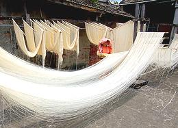
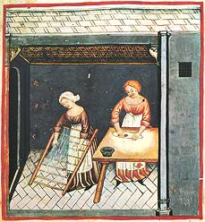
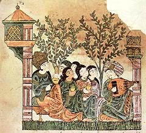

SAFARI
Users
- General & History
- Cooking Pasta
- Making Fresh Pasta
- Types, Shapes & Sizes
- Health & Nutrition
- Links - to pasta sites.
General & History
China
 The earliest known noodles have been found in China. Due to a lucky accident (lucky for us - not for the inhabitants of the town of Lajia), a fresh bowl of noodles was inverted and buried in mud and silt. An air pocket under the bowl protected and preserved the noodles, dated to 2000 BCE. These noodles, about 20 inches long, were made from foxtail millet (Setaria italica) and broomcorn millet (Panicum miliaceum).
In early times the Chinese despised wheat, not just because it was introduced from foreign lands, but also because they could only boil or steam it whole, and that doesn't work well with wheat. They couldn't make anything like Western bread, buns or dumpling until more powerful flour grinding mills were introduced through trade with the Roman Empire. This happened during the Han Dynasty, about 300 BCE, after which wheat became a prestige grain in the imperial courts ( P6,P7).
Even with Roman style mills, the Chinese could not make real "pasta", or even the light leavened breads enjoyed in the West, because they lacked the essential hard, high gluten wheats. Asian noodles were then, as they are today, soft and fragile, supporting only simple sheet, ribbon and strand shapes.
Of course, farther south, noodles were doubtless being made from rice, as they are today, though when this began is completely unknown. Preservation of noodles in the tropics is even more unlikely than in Europe. Photo by Max Chu distributed under license Creative Commons Attribution-ShareAlike v2.0 Generic.
Europe
 The origin of pasta and noodles in Europe is obscure, but they weren't brought back from China by Marco Polo. In his travel journals Mr. Polo described noodle products as "like vermicelli" and "like lasagna", terms that would have been meaningless if these forms of pasta were not already quite familiar to Italians. I've even encountered one Japanese site that says Marco Polo introduced Italian noodle making techniques to China.
Marco Polo returned to Italy in 1295, but an estate inventory from 1275 listed macaronis. A book with recipes for vermicelli, tortelli and tortelletti was published before 1295. This pretty much puts a ribbon on the non-Chinese origin issue, as do Mr. Polo's descriptions, which indicate noodles much different from those made in Italy.
Scenes found in Etruscan tombs possibly show the making of pasta and Etruscan tools have been found which could have been used to make pasta but this is currently highly controversial.
The Ancient Greeks made a wide noodle called laganon, possibly similar to today's lasagna, which was baked in ovens rather than boiled. Comments by Roman writers suggest that a form of layered lasagna was being made in first century Rome. No recipes are given but the dough was almost certainly fresh, not dried. It is not known for sure if they were fried, baked, steamed or boiled.
What is well established is that Sicily had durum wheat and introduced modern pasta to Italy not long after the Arabs were thrown out by Norman King Roger I in 1091. During this time the book De arte Coquinaria per vermicelli e macaroni siciliani (The Art of Cooking Sicilian Macaroni and Vermicelli) was published, and the Arab geographer Al-Idrisi described manufacture and export of dried pasta in Sicily in 1150. Verified records of dried pasta exist from the reign of King Roger II (1130 - 1154).
Around 1700, Naples, Italy, became the center of pasta production because it had exactly the right weather for drying. It was also a seaport where grain ships were unloaded. Italy did not produce enough durum wheat for its own use so most was imported from Russia, and now from Canada.
It is pretty certain the profusion of sauces with which to dress pasta are of Italian origin. Arab records don't mention sauces and Chinese noodle practices are much different from European. Illustration by unknown, copyright expired.
Arabic Lands
 The Arabs appear to have used dried noodles as early as the 5th century CE as a transportable food for trade and warfare. They haven't developed it much since but may have introduced the drying technique to Sicily.The Arabic name, itriyah, indicates dried noodles obtained from a merchant. This implies fresh noodles were already well established in home kitchens. Middle Eastern noodles sold today are from fairly soft wheat, rolled and cut into soft fragile strips, so they barely qualify as "pasta". They are often sold toasted, a treatment not found elsewhere.
Some think couscous, a form of pasta, may have been invented in Sicily and taken from there to North Africa and eventually to other Arab dominated lands. The only thing we can have much confidence in is that Sicily had durum wheat and introduced modern pasta to Italy after the Arabs were thrown out by the Norman king Roger I in 1091. In any case, it is recorded that Sicily was exporting dried pasta to Italy long before Marco Polo's travels.
Types of Pasta
The two main categories of pasta are "Dried" and "Fresh". After that it's what it's made out of, and then it's all a mater of shape.and size.
Dried Pasta:
This is a European specialty because Europe has access to, and the money to pay for, hard winter wheat (durum wheat). While dried noodles certainly are used in the Near East and the Orient, they're made from soft wheat so are pale in color, very fragile and doen't cook to the firm texture hard wheat pasta does.In Asia, dried noodles are also made of ingredients other than wheat, such as bean starch, rice flour, sweet potato starch, etc. These produce noodles far different in character than those made from wheat.
Fresh Pasta:
This is made practically everywhere, but may not qualify strictly as "pasta", because it's most often made from softer wheat. Fresh pasta is nearly always mixed to a firm dough, then rolled out very thin to extremely thin and cut into the desired shape. Some Asian noodles are also made by stretching and folding the dough until it has many thin layers. The roll of dough is then cut into strips and the noodles unfold as separate strands.Egg Pasta:
This the same as regular wheat pasta but with eggs as an additional ingredient. Fresh pasta is customarily made with eggs, but dried egg pastas are popular in Central and Northern Europe. Chinese "egg noodles" are most often faked up with yellow dye and contain no egg, though some can be found that do.Colored Pasta
This should be made with only natural colors. "Tricolor" uses tomato and spinach for color. Where more colors are desired tomato, spinach, turmeric, red beet, basil, carrot and squid ink are used in powdered form at about 1.5%, except tomato which may be around 3%. The colorant does flavor the pasta but not strongly. Use a simple butter or oil dressing on these to preserve color and flavor.Choosing Shapes:
The four factors in choosing an appropriate shape are how well sauce should cling to it, consistency with the size and shape of other ingredients, appearance and variety. Italians have developed some very specific ideas about what pasta shape goes with what recipe, but here in North America we have little such guidance and can do as we please.Health & Nutrition
Most Noodles and Pasta have a reputation as refined grain products, "empty calories" with a high glycemic index - the conventional exception being pasta made from whole wheat. In actuallatiy, this is not uniformly so. In particular, high quality durum wheat extruded pasta has a glycemic index of 42 to 45, against whole wheat pasta at 37 and well below 55, the threshold for low glycemic foods. The reason for this is that the starch is tightly bound in proteins, so is digested slowly. Pasta cooked "al dente" will have a lower glycemic index than overcooked pasta. Source: Barilla.
This information does not apply to noodles of other types, as extruded pasta made from durum wheat is a unique product. It also may not apply to fresh durum wheat pasta rolled out into sheets, as is often done at home in Italy, because the proteins are not worked as hard as in the extrusion process.
Links
- P2 - Pasta & Shapes - Cook's Thesaurus
- P4 - Pasta Shapes - Archimedes' Laboratory
- P5 - Pasta Shapes - Pasta it
- P6 - Pasta History - The History of Macaroni Clifford A Wright.
- P10 - Oldest noodles unearthed in China - BBC News